Set defaults
设置默认信息
Configure default hospital and department. These fields are optional and can be edited for each patient later.
可设置默认医院和默认科室。这两项不是必填项，后续也可针对单个患者修改。
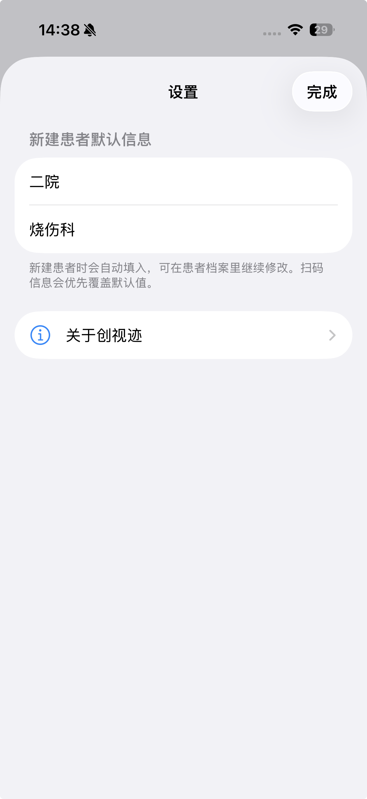
User Guide · Clinical Documentation Aid
WoundTruth is a local-first iOS app for clinicians. It helps create patient profiles, capture AR wound videos, review selected frames, measure length, curve, area, and depth profile, then export complete local record packages.
用户指导书 · 临床记录辅助工具
创视迹是一款本地优先的 iOS 应用，面向医护人员，用于建立患者档案、采集 AR 创面视频、回看关键帧、完成长度、曲线、面积和剖面测量，并导出完整本地记录数据包。
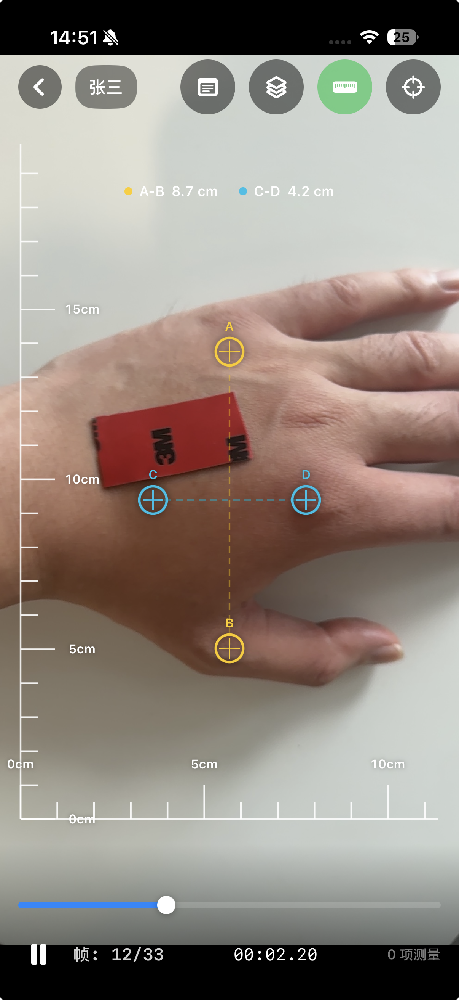
Important Disclaimer
WoundTruth does not provide diagnosis, treatment recommendations, treatment decisions, automated medical conclusions, emergency medical advice, or guaranteed accuracy. Measurements may be affected by device depth capability, capture distance, lighting, reflection, occlusion, motion blur, wound boundary selection, and whether A-B / C-D reference lines are placed on the same physical plane as the measured wound area. Qualified healthcare professionals must use clinical judgment.
重要免责声明
创视迹不提供诊断、治疗建议、治疗决策、自动化医疗结论、急救指导或固定精度保证。测量结果可能受到设备深度能力、拍摄距离、光照、反光、遮挡、运动模糊、创面边界选择，以及 A-B / C-D 参考线是否与创面处于同一物理平面等因素影响。医护人员应结合临床情况自行判断。
The app is designed around a repeatable clinical follow-up loop: profile, recording, review, measurement, notes, and archive.
应用围绕可重复的临床随访流程设计：建档、录像、回看、测量、备注和归档。
Configure default hospital and department. These fields are optional and can be edited for each patient later.
可设置默认医院和默认科室。这两项不是必填项，后续也可针对单个患者修改。

Only patient name is required. Patient ID can be typed, scanned, or generated automatically.
患者姓名是唯一必填项。患者 ID 可手动输入、扫码录入或自动生成。
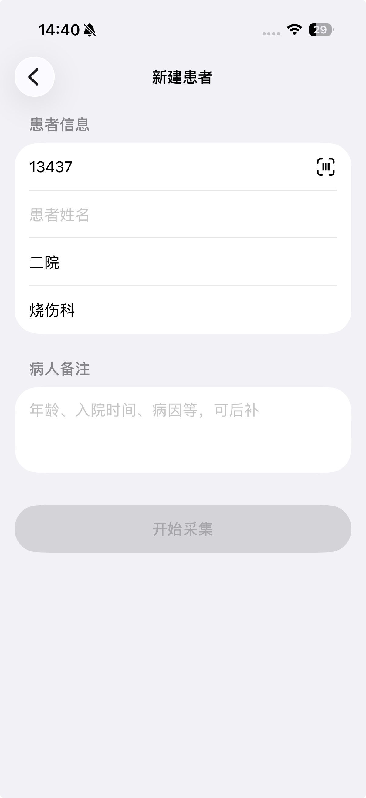
Adjust A-B vertical and C-D horizontal reference lines on the same physical plane as the wound area, then record steadily.
将 A-B 纵向参考线和 C-D 横向参考线放在与创面相同或近似相同的物理平面，再稳定录像。
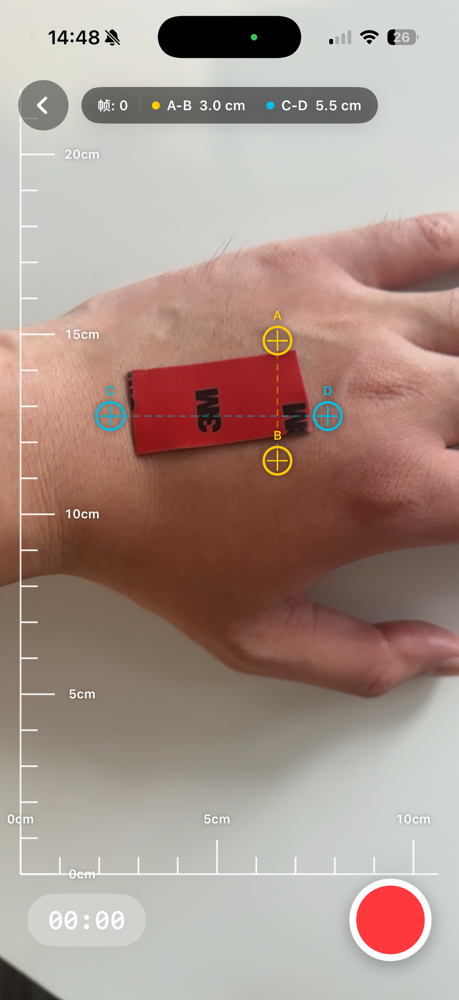
Scrub to a frame, inspect the ruler, measure length, curve, area, or profile, and add notes.
拖动到指定帧，观察标尺，完成长度、曲线、面积或剖面测量，并添加备注。
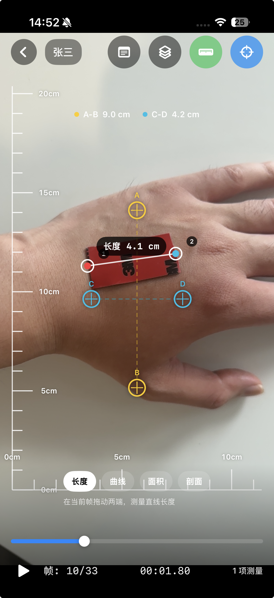
Frame-level measurement tools
单帧测量工具
Press and drag from the start point to the end point to measure wound length, width, or any straight-line distance.
按住并从起点拖动到终点，用于测量创口长、宽或任意两点直线距离。
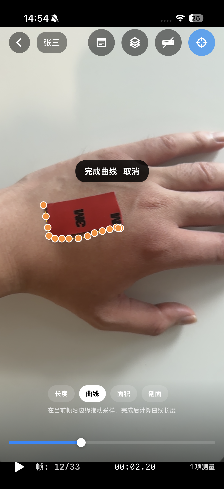
Trace a wound margin or irregular boundary, then finish to calculate curved edge length.
沿创面边缘或不规则边界拖动，完成后计算边缘曲线长度。
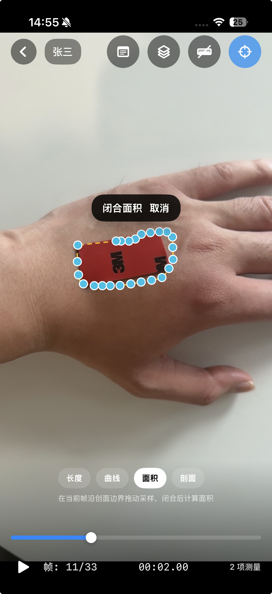
Trace around the wound boundary. The path closes automatically and the selected area is calculated.
沿创面边界拖动，路径自动闭合后计算所选区域面积。
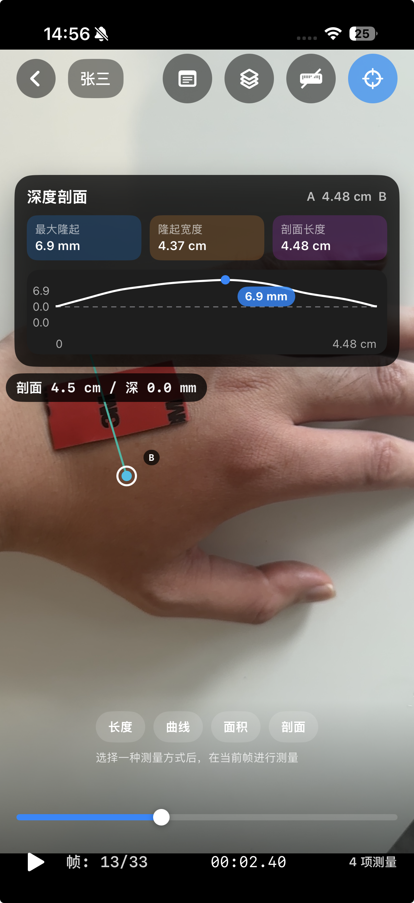
Place a cross-section line to view surface variation, including raised or depressed areas, using available depth data.
放置剖面线，基于可用深度数据查看局部凸起、凹陷和表面起伏。
Reference ruler logic
参考标尺逻辑
A-B is the vertical reference line used to calculate the y-axis ruler scale. C-D is the horizontal reference line used to calculate the x-axis ruler scale. For better consistency, place both on the same physical plane as the wound or measured surface.
A-B 是纵向参考线，用于计算画面纵坐标方向的标尺刻度；C-D 是横向参考线，用于计算画面横坐标方向的标尺刻度。为提高一致性，应尽量将二者放在与创面或待测表面相同的物理平面上。
Review, verify, annotate
回看、核验、备注
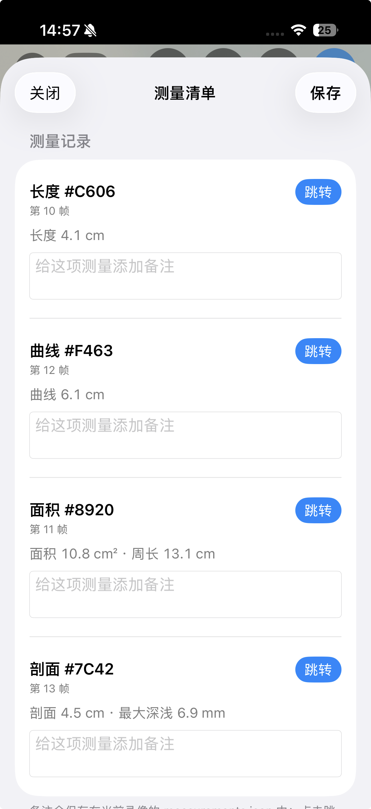
Open the measurement list, review notes, and jump directly to the frame where a measurement was created.
打开测量列表，查看备注，并快速跳转到对应测量所在帧。
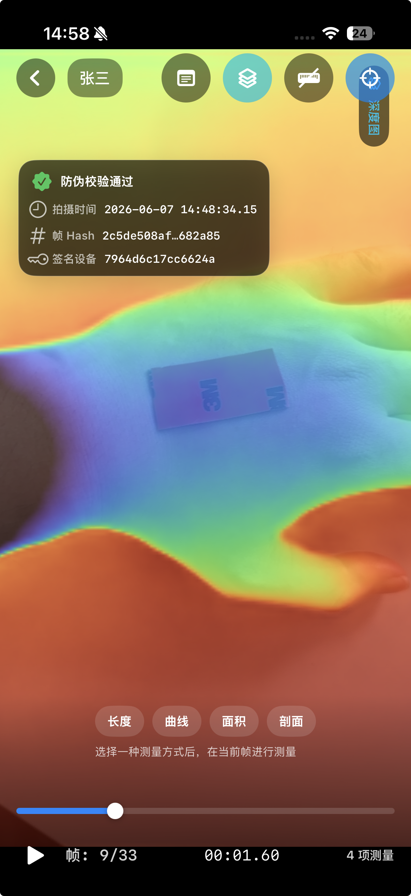
Toggle depth overlay, capture time, and frame hash information for record verification.
可叠加显示深度图、拍摄时间和帧 HASH 信息，用于辅助记录核验。
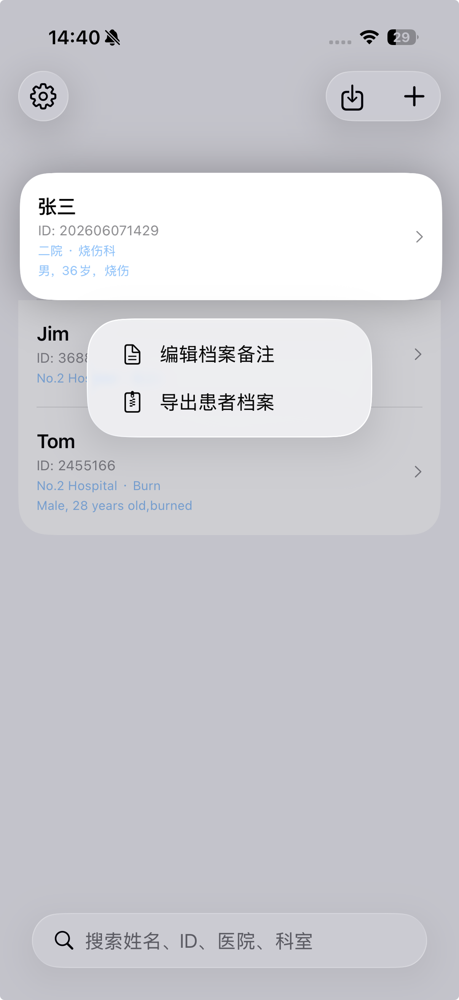
Long-press a patient to edit notes or export a patient archive for backup, computer transfer, or consultation.
长按患者可编辑备注或导出患者档案，用于备份、电脑归档或会诊交流。
Local-first data package
本地优先的数据包
FAQ
No by default. Records stay on device unless the user manually exports or shares a package through iOS system actions.
默认不会。数据保存在本机，只有用户主动导出或分享数据包时才会离开设备。
Core features run locally. Wireless data is only needed when the user opens support, tutorial, or privacy policy links.
核心功能本地运行。无线数据权限主要用于用户主动打开教程、支持网站或隐私政策链接。
Depth quality, reference line placement, perspective, lighting, reflection, motion, and boundary selection can affect results.
深度图质量、参考线位置、透视角度、光照、反光、运动和边界选择都会影响测量结果。
Yes. Compatible packages can be imported on another device, such as recording on iPhone and reviewing on iPad.
可以。兼容数据包可导入另一台设备，例如在 iPhone 录制后导入 iPad 回看。